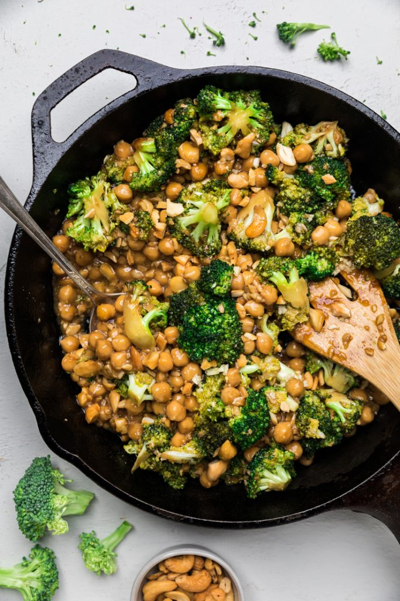

Chickpea, Cashew & Broccoli with Garlic Sauce Skillet

Description
In order to make this Chickpea, Cashew & Broccoli with Garlic Sauce Skillet, you’re going to start by whisking together the soy sauce, some of the sesame oil and arrowroot powder together. If using the optional garlic chili sauce, stir it together in this sauce. Then add the remaining oil to a skillet over medium high. We prefer using our cast iron skillet for this recipe. Add in the minced garlic and sauté for one minute.
Next, add in the broccoli and sauce and stir together. Cook for 8 minutes, stirring occasionally. Add in the cashews and chickpeas and cook for another 3-7 minutes or until broccoli is the preferred texture you want. (Less for broccoli with a slight crunch, more for broccoli that is softer)
Ingredients
- 1-cup unsalted roasted cashews, chopped
- 1 can chickpeas, drained
- 1 head broccoli florets (approximately 4 cups of broccoli florets)
- 1 head garlic, minced
- ¼ cup sesame oil , + 2 tbsp
- 1 tablespoon arrowroot powder (can sub cornstarch)
- ½-1 teaspoon garlic chili sauce *optional
Steps
- Start to prepare your rice, quinoa, or noodles if serving with this dish.
- In a small bowl, whisk together ¼ cup sesame oil, soy sauce, arrowroot powder, and optional garlic chili sauce. *Add in ½ teaspoon for a little heat or 1 teaspoon for a bit more.
- In a cast iron skillet over medium heat, add in 2 tablespoon of sesame oil.
- Add in minced garlic and saute for 1 minute.
- Add in the broccoli and sauce and combine. Turn heat down to medium low.
- Cover and Cook for 8 minutes. Stirring occasionally so broccoli doesn't stick to the bottom. *If needed turn down heat a bit or add a splash of vegetable broth.
- Add in the chopped cashews and chickpeas and stir together.
- Cover and cook for an additional 3-7 minutes. *If you prefer a bit of a crunch with your broccoli cook for shorter, or softer broccoli cook longer.
- Remove from heat and serve over rice or other optional dish.